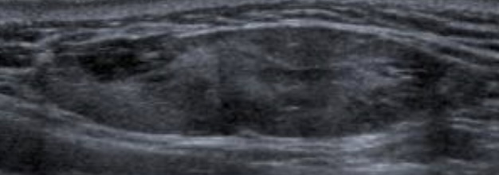

Foie de taille et de morphologie normales, sans lésion focale.
Tronc porte avec flux hépatopète et veines sus-hépatiques hépatofuges.
Pas de calcul vésiculaire. Pas de dilatation des voies biliaires.
Pas d'anomalie du pancréas explorable.
Rate homogène de taille normale.
Pas de dilatation des cavités pyélocalicielles.
Reins de taille et de morphologie normales, sans lésion focale.
Absence de lésion individualisable dans le rétropéritoine médian.
Vessie en faible réplétion, sans anomalie décelable.
Pas d'épanchement péritonéal.
Pas d'anomalie en projection de l'utérus et des annexes.
Reins :
Grand axe mesurant à droite et gauche mm.
Différenciation cortico-médullaire satisfaisante.
Pas de dilatation des cavités pyélo-calicielles.
Pas d'image lithiasique ni de lésion suspecte.
Vessie :
En réplétion, avec contenu anéchogène.
Pas d'anomalie de paroi décelable.
Pas d'épanchement péritonéal.
Dysmorphie hépatique avec contours bosselés.
Echostructure homogène, sans lésion focale suspecte.
Tronc porte et branches portales hépatopètes.
Vitesse maximale dans le tronc porte : cm/s.
Pas de dilatation des voies biliaires.
Grand axe de la rate : cm.
Pas de voies de dérivation porto-systémiques décelable.
Absence d'ascite.
Pas d'image lithiasique ni de dilatation canalaire dans les glandes sous-mandibulaires.
Pas de lésion focale dans le lobe superficiel des glandes parotides.
Pas de ganglion suspect dans les chaînes ganglionnaires cervicales.
Perméabilité des axes vasculaires jugulaires et carotidiens.
Thyroïde de taille normale sans image nodulaire significative.
Ganglions jugulo-carotidiens supérieurs bilatéraux de petit axe infracentimétrique, de forme ovalaire (rapport grand axe sur petit axe > 2), avec hile hyperéchogène central linéaire, d'échostructure homogène, bien limités, avec un environnement péri-ganglionnaire normal.
Examen debout lors de manœuvres de Valsalva répétées, puis en décubitus.
Pas de hernie ou autre lésion inguinale décelable.
Pas d'épanchement dans l'articulation coxo-fémorale.
Pas d'ascite ni de syndrome de masse dans le pelvis.
Vessie en semi-réplétion, à contenu anéchogène, sans anomalie pariétale.
Examen debout lors de manœuvres de Valsalva répétées, puis en décubitus.
Hernie inguinale
Pas de hernie inguinale controlatérale décelable.
Consignes de consultation aux urgences en cas de tuméfaction irréductible et inflammatoire qui ferait suspecter une strangulation intestinale.
Consignes de consultation aux urgences en cas de tuméfaction irréductible et inflammatoire qui ferait suspecter une strangulation intestinale.
complications post-op = hématome, lymphocèle, varicocèle, meshome DD douleurs inguinales = arthrose hanche/rachis, pubalgie du sportif Diastiasis des muscles grands droits si > 20 mm Hernie de Spiegel = ligne semi-lunaire
Formation ovalaire sous-cutanée aux contours réguliers mesurant mm.
Son contenu est hypoéchogène hétérogène avec un renforcement postérieur.
Absence de vascularisation décelable au Doppler.
Amincissement dermique focal en regard.
Aspect évocateur de kyste épidermoïde, sans signe de complication.
Formation ovalaire sous-cutanée aux contours irréguliers mesurant mm.
Son contenu est hypoéchogène hétérogène avec un renforcement postérieur.
Infiltration des tissus mous adjacents avec hyperhémie péri-lésionnelle.
Absence de vascularisation intrinsèque.
Aspect évocateur d'une infection de kyste épidermoïde.
Intérêt d'un contrôle échographique en cas de d'évolution défavorable.
bien limitée, < 5 cm, pas de flux doppler, septas fibreux < 2 mm

Formation ovalaire superficielle d'allure graisseuse, aux contours bien limités, mesurant mm.
Topographie sus-aponévrotique et sans extension au fascia et au plan musculaire.
Absence de vascularisation décelable au Doppler.
Aspect évocateur de lipome, sans signe d'atypie.
Un contrôle échographique sera nécessaire en cas d'évolutivité.
paroi abdominale, dans le plan musculaire, croissance lente
masse hypoéchogène bien circonscrite
Reins :
Grand axe mesurant à droite et gauche mm.
Différenciation parenchymo-sinusale satisfaisante.
Pas de dilatation des cavités pyélo-calicielles.
Pas d'image lithiasique ni de lésion suspecte.
Vessie pré-mictionnelle :
En semi-réplétion, avec contenu anéchogène, sans lésion nodulaire.
Détrusor modérément épaissi, sans diverticule.
Pas d'épanchement péritonéal.
Prostate par voie sus-pubienne :
Contours réguliers.
Volume estimé à cc.
Protrusion intravésicale du lobe médian.
Pas d'anomalie du carrefour vésiculo-déférentiel.
Vessie post-mictionnelle :
Résidu de ml.
hypertrophie si > 30 cc RPM significatif si > 50 cc ou > 20% du volume pré-mictionnel
Testicules de taille normale et symétriques.
Echostructure homogène, sans lésion focale suspecte.
Vascularisation testiculaire symétrique sans particularité.
Epididymes et cordons spermatiques d'aspect normal.
Pas d'hydrocèle significative.
Examen par voie suspubienne puis endovaginale après accord de la patiente.
Utérus antéversé antéfléchi mesurant cm.
Endomètre hyperéchogène mesurant mm.
Pas d'anomalie dans le myomètre.
Pas de lésion endocavitaire décelable.
Pas de dilatation tubaire.
Ovaires latéraux, folliculaires, de taille normale.
Pas d'épanchement pelvien significatif.
Pas de dilatation des cavités pyélocalicielles.
0-1-2 sous-muqueux 3-4-5 intramuraux 6-7 sous-séreux
> 5 myomes ou > 5 cm => IRM
épaississement glandulo-kystique de l'endomètre (mais /!\ K RR 1,6)
polypes glandulo-kystiques, ↗ myomes et adénomyose
SOPK
Examen par voie suspubienne puis endovaginale après accord de la patiente.
Ovaires latéraux dont la surface mesure à droite et gauche cm².
Ils contiennent moins de 20 follicules par ovaire.
Pas de dilatation tubaire.
Utérus antéversé antéfléchi mesurant cm.
Endomètre hyperéchogène mesurant mm.
Pas d'anomalie dans le myomètre.
Pas d'épanchement pelvien significatif.
Pas de dilatation des cavités pyélocalicielles.
Examen par voie suspubienne puis endovaginale après accord de la patiente.
Ovaires latéraux folliculaires mesurant à droite et gauche mm.
Nombre et taille des follicules à droite/gauche :
- De moins de 5 mm :
- Entre 5 et 10 mm :
- De plus de 10 mm :
Doppler des artères utérines avec IR/IP :
- à droite :
- à gauche :
Pas de dilatation tubaire.
Utérus antéversé antéfléchi mesurant cm.
Endomètre hyperéchogène mesurant mm.
Pas d'anomalie significative du myomètre.
Pas d'épanchement pelvien significatif.
Pas de dilatation des cavités pyélocalicielles.
écho à J3 du cycle, réserve ovarienne faible si < 5 follicules/ovaire
RT
Silhouette cardiomédiastinale d'aspect normal.
Pas d'opacité en projection des champs pulmonaires.
Pas de comblement des récessus costo-diaphragmatiques.
Structures osseuses sans particularité significative.
Respect de la hauteur et bon alignement des corps vertébraux.
Pas de pincement des espaces intersomatiques.
Arthrose articulaire postérieure prédominant aux derniers étages lombaires.
Pas de remaniement dégénératif significatif des articulations coxo-fémorales.
Aspect normal des interlignes articulaires sacro-iliaques.
Pas de lésion osseuse suspecte et parties molles sans particularité.
Scoliose
Scoliose mesurant ° entre le plateau supérieur de et le plateau inférieur de .
Stade d'ossification Risser
Bascule du bassin par sous-dénivelation vers la
Absence de malformation vertébrale décelable.
Pas d'anomalie transitionnelle lombo-sacrée.
Resepct de la cyphose thoracique et de la lordose lombaire.
Restant du cadre osseux et parties molles sans particularité.
Pano
Pas de lacune apico-dentaire.
Bonne ventilation des cuvettes maxillaires.
Condyles mandibulaires d'aspect normal.
Pas de lésion osseuse suspecte.
denture lactéale terminée à M30, dentition définitive de 6 à 20 ans
désinclusion (ouverture du sac folliculaire avec formation des racines) < éruption
/!\ rétention (obstacle) / inclusion (reste dans le sac folliculaire)
Cavum
Discret épaississement des tissus mous du cavum, avec aspect convexe des contours antéro-inférieurs, sans retentissement significatif sur la filière naso-phrayngée.
Cadre osseux sans particularité.

 polypes cholestéroliques
polypes cholestéroliques


 hypertrophie si > 30 cc RPM significatif si > 50 cc ou > 20% du volume pré-mictionnel
hypertrophie si > 30 cc RPM significatif si > 50 cc ou > 20% du volume pré-mictionnel
 12-20 cc (1-2 cc ≤ 12 ans) → formule de Lambert = cm³ x 0,71
12-20 cc (1-2 cc ≤ 12 ans) → formule de Lambert = cm³ x 0,71 tumeur => TDM TAP (métas poumons, foie, cerveau, os)
tumeur => TDM TAP (métas poumons, foie, cerveau, os) cryptorchidie = descente spontanée avant M3 ++ sinon orchidopexie, RR cancer x30
cryptorchidie = descente spontanée avant M3 ++ sinon orchidopexie, RR cancer x30
 0-1-2 sous-muqueux 3-4-5 intramuraux 6-7 sous-séreux
0-1-2 sous-muqueux 3-4-5 intramuraux 6-7 sous-séreux